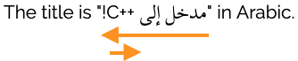
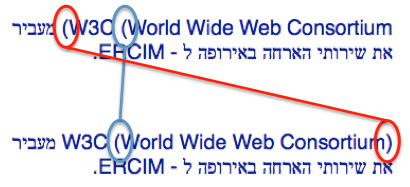
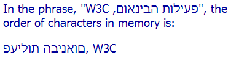

阿拉伯语、希伯来语和其他使用从右到左文字的语言通常包含数字、拉丁字母或用其他文种书写的文本：这些文本通常在从右到左的上下文中从左到右书写。
本文告诉你如何编写不同书写方向的文本在段落或其他HTML块内混合（即内联或短语内容）的网页。
配套文章HTML中的结构标记和从右到左文本告诉你如何使用html、p、div等标记和表单。
本文重点关注HTML中的用法，但大多数概念也适用于其他标记语言。
这里的建议仅适用于行内元素，如span、cite、em等，处理块元素时请参见上面提到的文章。
如果你知道所涉及的所有文本的方向，请在标记中紧密包裹每个反向短语，并在该标记上使用dir属性。确保嵌套标记以显示结构。
<p>the title is <cite dir="rtl">AN INTRODUCTION TO <span dir="ltr">c++</span></cite> in arabic.</p>
你的浏览器中的输出：
The title is مدخل إلى C++ in Arabic.
如果你想在旧版本或不符合标准的浏览器上运行你的代码，而且在紧密包裹的文本后紧跟着一个数字或逻辑上独立的反向短语，请在短语后立即添加‏或‎ （选择与周围文本基方向对应的那个）。
<p>we find the phrase '<span dir="rtl">INTERNATIONALIZATION ACTIVITY</span>‎' 5 times on the page.</p>
你的浏览器中的输出：
We find the phrase 'פעילות הבינאום' 5 times on the page.
如果你不知道将在运行时插入的文本的方向，请将dir=auto添加到紧密包裹该位置的所有标记中。如果没有标记，请用bdi元素包裹这个位置。
foreach $phrase
echo "<p>we found the phrase <q dir='auto'>$phrase['text']</q> $phrase['count'] times.</p>";
你的浏览器中的输出：
We found the phrase פעילות הבינאום
5 times.
foreach $restaurant echo "<p><bdi>$restaurant['name']</bdi> - $restaurant['count'] reviews</p>";
你的浏览器中的输出：
פיצה סגלה - 5 reviews
如果你对Unicode双向文本算法不太熟悉，在进一步阅读之前，你应该阅读双向文本算法工作原理的基本介绍。
如果你需要，还有我们在本文中将引用的各种元素和属性的描述。
在下面的章节中，我们会检查可能出错的具体例子、为什么会出错以及如何修复。不过，重要的是要认识到，当一个方向的内容包含相反方向的内联短语时，这些问题会发生。我们将这些称为反向短语。反向短语可能是在单个方向运行（比如一个词），也可能是一组包含不同方向的文本，内部有嵌入的基方向变化。
在下面的例子中，英语的句子在引号之间包含一个反向短语。这个短语本身又包含一个嵌套的反向短语（“C++”），以及一个必须出现在阿拉伯语短语末尾的感叹号（在左侧引号的旁边）。箭头表示一个反向短语。

这类短语的常见例子包括URL、引用、书籍/文章/戏剧的标题、带格式的数字（比如电话号码和MAC地址）、街道和电子邮件地址，以及各种名称，如品牌名、首字母缩略词、零件号、网站名、地名、文件名（和路径）等。
在把文本从数据库等地方放入页面的应用中，问题更严重。应用通常不能提前知道文本是否是（或可能包含）反向短语，必须在运行时通过检查字符的Unicode范围来估计其方向。
每当出现反向短语时，事情就可能出错。也就是说，如果文本包含行内的反向短语而没有任何特殊包装，就会出现问题，这种短语可以：
虽然这个列表看起来令人生畏，但没有必要确定这些情况中的哪一个（如果有的话）适用于特定短语。有一种简单的默认方式来包裹反向短语，可以防止上述所有情况下的问题，在没有这些情况时也不会造成负面影响。下面的步骤描述了如何进行这种包裹。
这里我们总结了处理双向行内文本的默认指导原则。很多时候，其他方法也会有用，但这里概述的方法简单易用，应该可以用于所有情况。
有时，双向文本在没有干预的情况下会正常工作——比如，当反向短语是一个词且不是列表的一部分或后面没有跟数字时。但是，如果你想保持简单，避免需要仔细考虑是否需要添加标记，那么只需对所有方向变化遵循这些指导原则。使用这里的方法在不需要的地方不会造成问题，但在文本编辑后有时可能会变得有用。
解决内容中双向文本问题的最佳方法是在设置其基方向的标记中，紧密包裹每个反向短语。紧密包裹的意思是元素包含整个反向短语，并且除了反向短语之外什么都没有。
如果短语已经在行内元素中被紧密包裹（也就是它的外层本来就有标签），你可以直接用现有的元素。否则，用span元素紧密包裹反向短语。
然后添加dir属性。当你这样做时，之前提出的大多数问题会消失。这个属性不仅将正确的基方向应用于短语，而且当浏览器在元素上遇到dir属性时，它们会在书写方向上隔离元素内的文本与周围的文本。
dir属性如果没有标记紧密包裹反向短语，请添加span。
| 之前： | <p>RTL_TEXT ltr_text</p> |
| 之后： | <p>RTL_TEXT <span dir="ltr" lang="en">ltr_text</span></p> |
你的浏览器中的输出：
שם מוצר: Discover!
שם מוצר: Discover!
或者将dir添加到现有元素：
| 之前： | <p>RTL_TEXT <cite lang="en">ltr_text</cite></p> |
| 之后： | <p>RTL_TEXT <cite dir="ltr" lang="en">ltr_text</cite></p> |
你的浏览器中的输出：
הספר הבא לקריאה: Who were the Elamites?
הספר הבא לקריאה: Who were the Elamites?
不要忘了标记嵌套的单向文本，在标记中保持嵌套。
| 之前： | <p>ltr_text <cite dir="rtl">RTL_TEXT ltr_text_in_rtl</cite></p> |
| 之后： | <p>ltr_text <cite dir="rtl">RTL_TEXT <span dir="ltr">ltr_text_in_rtl</span></cite></p> |
你的浏览器中的输出：
The title is مدخل إلى C++ in Arabic.
The title is مدخل إلى C++ in Arabic.
避免属于不同方向的单向文本片段的后续数字的溢出效应。「###」表示数字。
| 之前： | <p>ltr-text <span lang="ar">RTL_TEXT</span> ### ltr_text</p> |
| 之后： | <p>ltr-text <span dir="rtl" lang="ar">RTL_TEXT</span> ### ltr_text</p> |
实际上，使用括号（而不是其他标点符号）在Gecko和Blink浏览器中解决了这里的问题，但在撰写本文时在Webkit浏览器中没有解决。然而，如果使用其他标点符号，如逗号或en空格等，问题确实会在Gecko和Blink中出现。使用这里的标记可以让你的代码更加健壮，防止浏览器兼容性和未来编辑的问题。
你的浏览器中的输出：
Wadi Rum < وادي القم >, 321km from Amman, is a World Heritage site.
Wadi Rum < وادي القم >, 321km from Amman, is a World Heritage site.
让列表按正确顺序显示：
| 之前 | <p>RTL_TEXT ltr_text, ltr_text</p> |
| 之后 | <p>RTL_TEXT <span dir="ltr">ltr_text</span>, <span dir="ltr">ltr_text</span></p> |
你的浏览器中的输出：
اتبع هذه الروابط بالترتيب: bidi_intro.net، bidi_advanced.net
اتبع هذه الروابط بالترتيب: bidi_intro.net، bidi_advanced.net
很多时候，这些溢出效应可以通过在适当的位置放置‎或‏来解决。这在示例页面中有更详细的讨论。不过，这里的包裹法也有效，并且避免了明智判断所需的努力。
注意：RLM和LRM只解决隔离问题，但无法修复我们之前看到的例子。还要注意，大多数时候你都会想把这些短语包裹在标记中，这样你就可以应用lang属性（以便选择正确的字体和其他排版行为，影响屏幕阅读器的阅读、拼写检查等）。
当文本将在运行时添加到你的HTML页面时，你可能无法提前预测文本的基方向。为了处理这种情况，你有两个选择。
如果短语已经被元素紧密包裹，你只需将dir="auto"添加到这个元素。这会方向性地隔离元素的文本，并通过查看第一个强字符来确定基方向。
| 之前 | foreach $phrase |
| 之后 | foreach $phrase |
你的浏览器中的输出：
We found the phrase 'פעילות הבינאום' 5 times.
We found the phrase 'פעילות הבינאום' 5 times.
否则，将短语放在bdi元素中（或者如果你愿意，放在span元素中，并把dir设置为auto）。没有dir属性时，bdi元素的行为和dir="auto"一样。
| 之前 | foreach $phrase |
| 之后 | foreach $phrase |
你的浏览器中的输出：
We found the phrase 'פעילות הבינאום' 5 times.
We found the phrase 'פעילות הבינאום' 5 times.
在某些情况下，你可能无法用上一节描述的标记，比如HTML中的title
在这种情况下，你需要用产生相同结果的不可见Unicode字符。
为了再现上面示例中描述的与嵌套基方向相关的标记效果，我们可以使用字符对包围嵌入的文本。第一个字符是U+2067 RIGHT-TO-LEFT ISOLATE (RLI)或U+2066 LEFT-TO-RIGHT ISOLATE (LRI)，放在与开始<span dir="..."> 标签相同的位置。第二个字符是U+2069 POP DIRECTIONAL ISOLATE (PDI)，对应于标记中的</span>。这是一个例子：
<title>the title says "⁧INTERNATIONALIZATION ACTIVITY, w3c⁩" in hebrew.</title>
你的浏览器中的输出：
The title says "פעילות הבינאום, W3C" in Hebrew.
要模拟dir的auto值或bdi，你可以在短语开头用U+2068 FIRST STRONG ISOLATE。
这些控制字符应该只用于行内的短语，不能用于段落等块元素。一般来说，建议你在能用的地方用标记，而不是这些字符对，因为标记更容易看到、管理，还和用于块元素的方法一致。当然，在用不了标记的地方，这是唯一的选择。
还有另一组改变基方向的字符：U+202B RIGHT-TO-LEFT EMBEDDING (RLE)、U+202A LEFT-TO-RIGHT EMBEDDING (LRE)和 U+202C POP DIRECTIONAL FORMATTING (PDF)，但它们不会方向性地隔离它们包裹的短语，所以最好不要用它们。
我们在上文中见过的两个字符，U+200F RIGHT-TO-LEFT MARK（RLM）和U+200E LEFT-TO-RIGHT MARK（LRM）也可以在适当的地方使用。除了字符值引用外，这些字符还有字符实体引用，‏和‎。
<title>the title says "INTERNATIONALIZE THE WEB!‏" in arabic.</title>
你的浏览器中的输出：
The title is "مفتاح معايير الويب!" in Arabic.
请注意，在上面的例子里，阿拉伯语文本不再标记语言或样式——这是在可能的地方使用标记而不是这些码位的一个原因。
Unicode双向文本算法有显示镜像字符的规则。这些字符的形状取决于它们是在LTR还是RTL上下文中显示。这些通常是成对的字符，比如括号，但也包括一些通常不成对的字符，如≠U+2260 NOT EQUAL TO。
在下面的例子里，字符>U+003E GREATER-THAN SIGN 在LTR上下文中指向右侧，但在RTL上下文中指向左侧：
<p dir="ltr">a > b > c</p>
<p dir="rtl">א > ב > ג</p>
你的浏览器中的输出：
a > b > c
א > ב > ג
这是完全自动的，你不用为了改变字形换一个字符。
开始括号的末端总是面向文本流的方向，而结束括号则是反方向的。这意味着，无论存储的内容是阿拉伯字母/希伯来字母还是拉丁字母，你都会在括号文本的开头使用相同的(U+0028 LEFT PARENTHESIS字符。换句话说，你可以把镜像字符的名字里的left想成开始，把right想成结束。
但是双向文本算法的最新实现更进一步，会试着去平衡括号。在下面的图片中，上面的部分是括号过去的样子（没有干预），下面显示它们在平衡作用下的样子。

你的浏览器中的输出：
W3C (World Wide Web Consortium) מעביר את שירותי הארחה באירופה ל - ERCIM.
同样，你不需要进行任何操作来启用这些改进，浏览器会自动完成。
有时你可能不希望双向文本算法进行任何重新排序。在这种情况下，你需要一些额外的标记来包裹你希望保持未排序的文本。在HTML中，我们可以通过行内的bdo元素来实现。请注意，你不该使用bdo来正常管理双向文本——它只用于特殊情况，主要是教育目的。不要将它与bdi所混淆。
我们可以用bdo标签来显示字符在内存中的顺序。你必须为bdo元素提供dir属性，值必须是rtl或ltr（不能是auto）。例如，下面的图片显示希伯来语文本在内存中的排序。

对于最后一行，我们在HTML中使用以下标记：
<p><bdo dir="ltr">INTERNATIONALIZATION ACTIVITY, w3c</bdo></p>
你的浏览器中的输出：
In the phrase, "פעילות הבינאום, W3C", the order of characters in memory is:
פעילות הבינאום, W3C
在XHTML2等其他XML应用中，它可能作为dir属性上的rlo或lro值来实现，使其能够应用于任何元素。还有Unicode控制字符可以用来实现相同的结果，但因为它们创建了不可见的边界，通常不推荐使用。